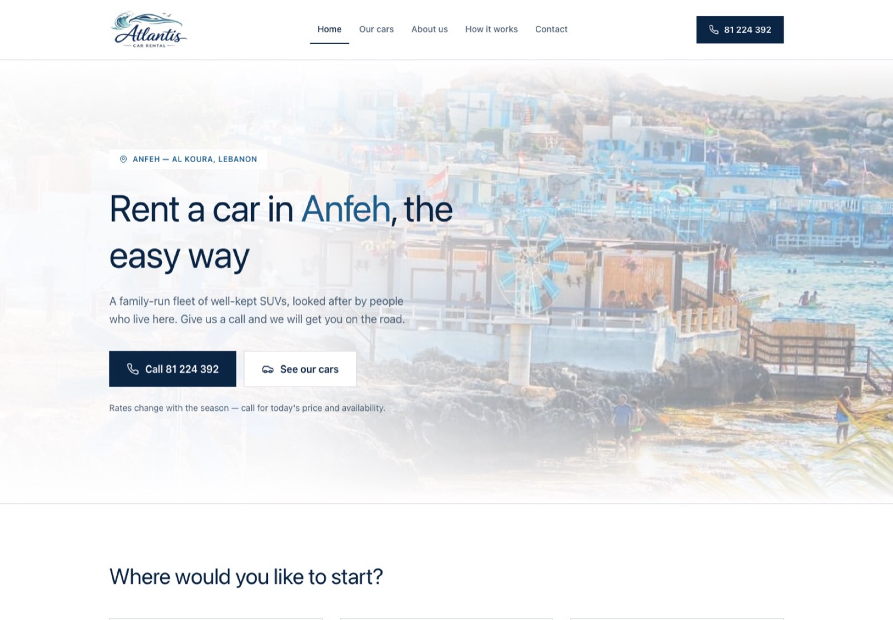
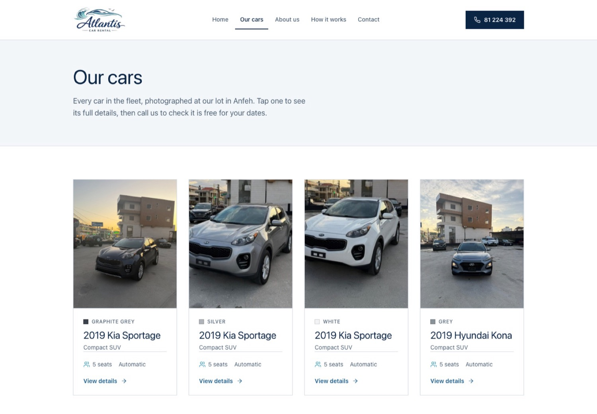
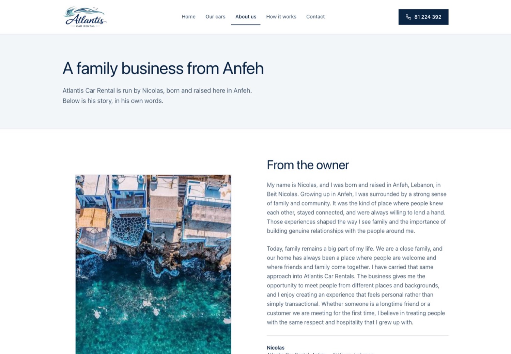
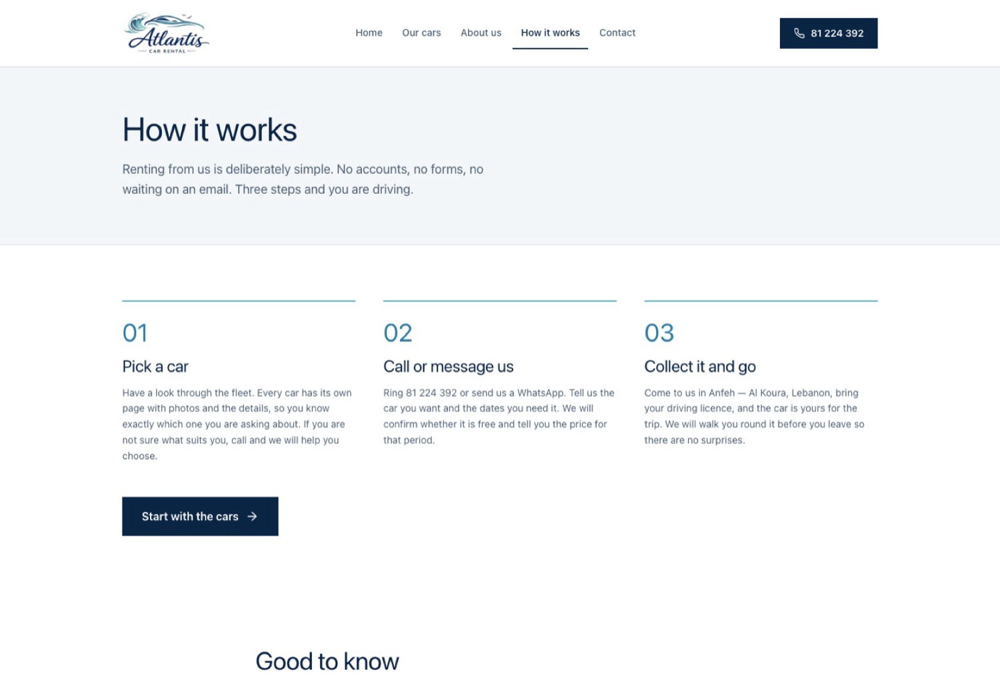
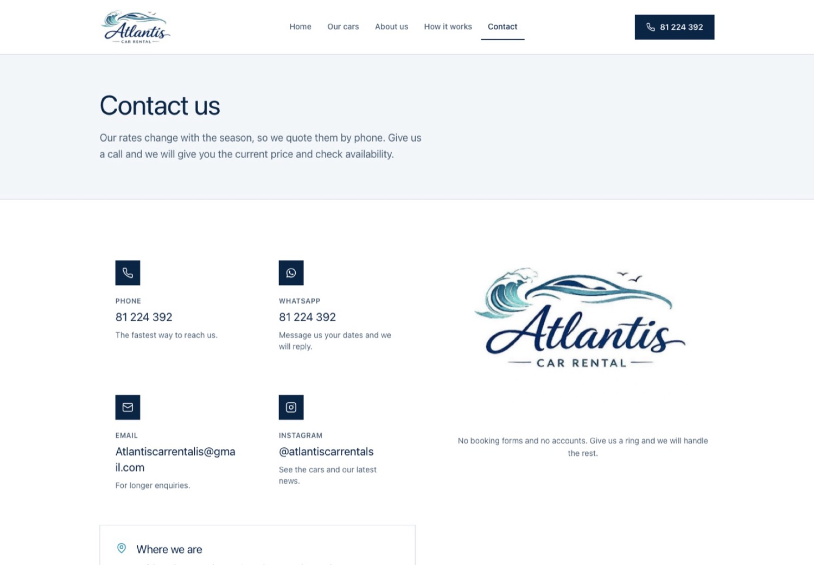

Client work — 2026
Atlantis Car Rental
A family runs a small fleet of SUVs in Anfeh, on the Lebanese coast. They had no website and no way for a visitor to see what they actually rent. I built them one, and a deployment pipeline to go with it.
- Role
- Sole developer and designer
- Stack
- Next.js 16, TypeScript, Tailwind v4
- Hosting
- Static export on Cloudflare Pages
- Status
- Built and deploying
Two constraints that shaped everything
Before writing a line, I asked the owners how they actually do business. Two answers determined the whole design.
- No prices on the site. Rates move with the season and get quoted on the phone. A price table would have been wrong within a month.
- No online booking. Customers call to ask about availability, and the family wants that conversation. It is how they judge a renter.
So every call-to-action on the site leads to a phone number, a WhatsApp thread or an email. The copy is written around that, and the codebase carries a note saying so, because the fastest way to break this site is to bolt a booking form onto it later.
The site
Six pages rather than one long scroll, so someone can be sent straight to the car they asked about. Every vehicle gets its own page with make, model, year, colour and specs, generated from a single data source.





Shipping it safely
The people who own this site are not engineers. If a deploy breaks it, nobody will notice until the phone stops ringing. So the pipeline is built to fail loudly instead of publishing quietly.
- On every push and pull request, the CI workflow installs dependencies exactly as locked, lints, typechecks, and builds the site both ways — as a server build and as a static export.
- It counts the pages. If the export produces fewer than ten, the build fails. That single check catches the whole class of routing mistakes that silently drop pages.
- Deployment is gated on that being green, and publishes to Cloudflare Pages when
mainchanges.
The site has no server code and no database, so the static export is an ordinary folder of HTML. That was deliberate: it means the family is never locked to one host, and the running cost is nothing.